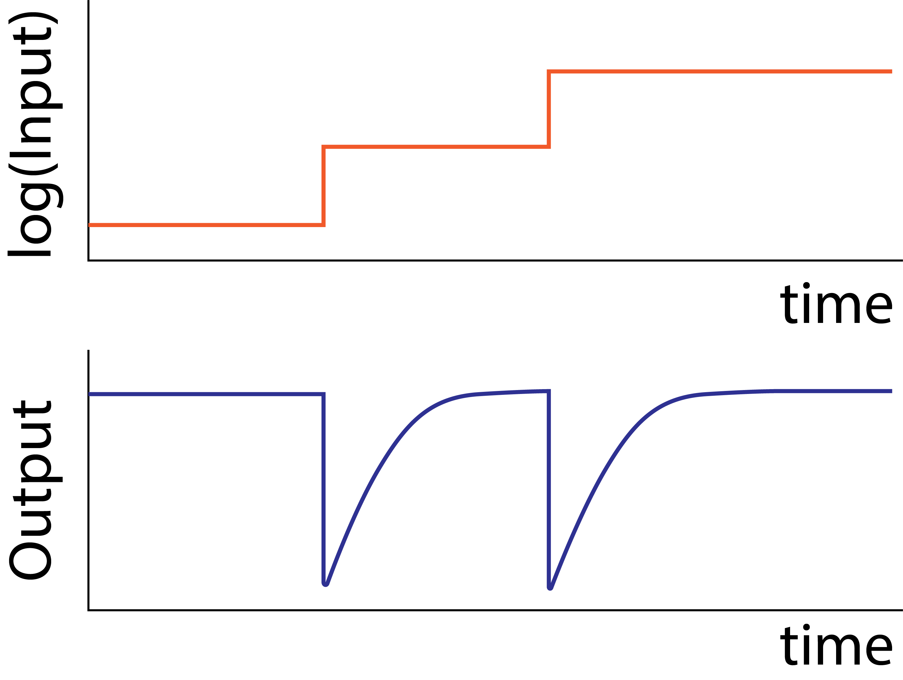
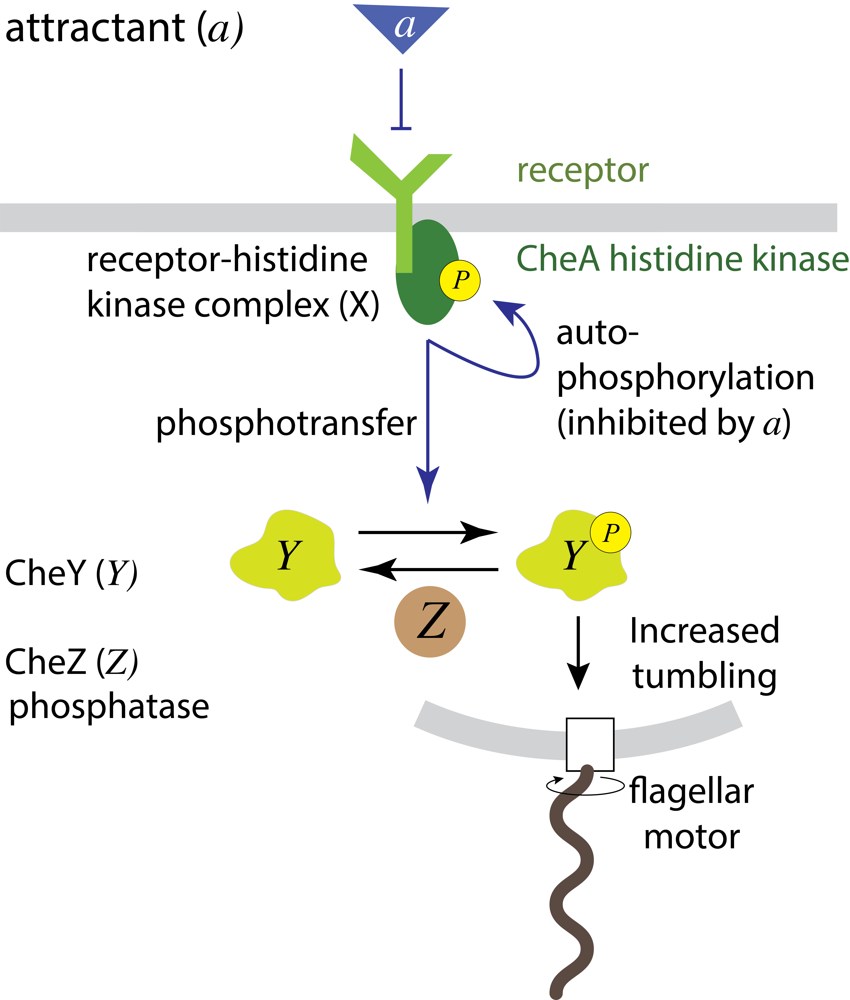
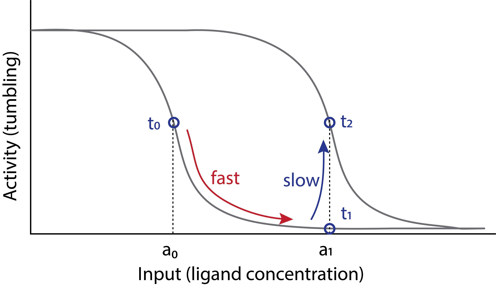
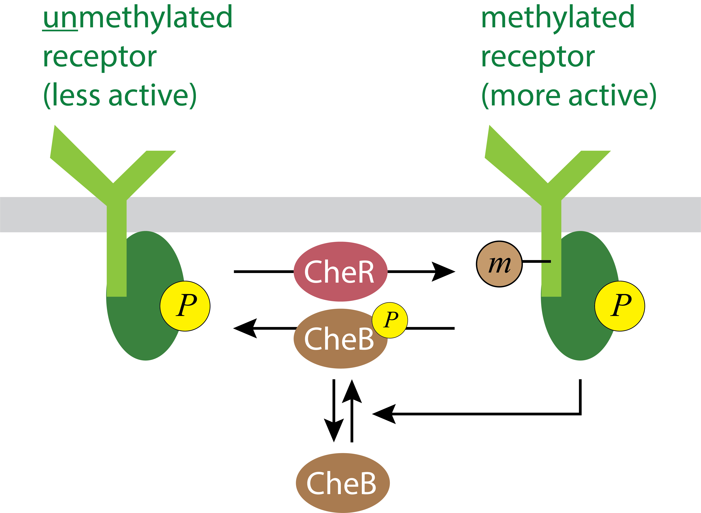
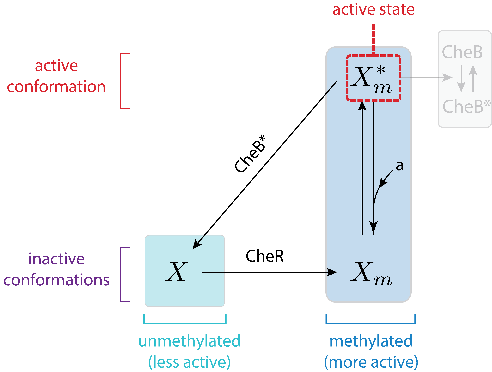
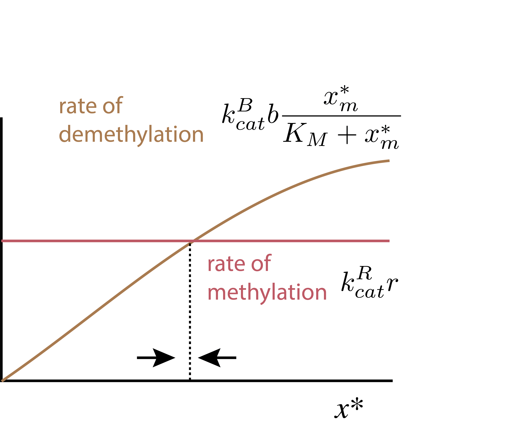
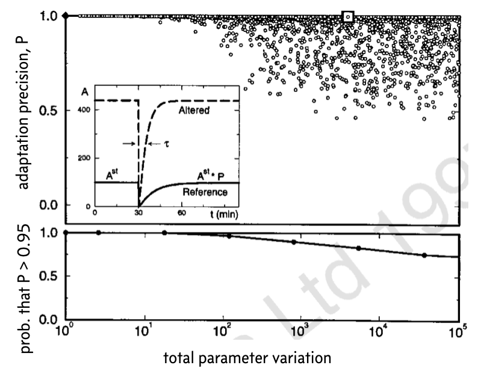

Code
import numpy as np
from biocircuits.viz import bokeh_show
import bokeh.io
import bokeh.plotting
bokeh.io.output_notebook()Design principles
Concepts
Techniques
import numpy as np
from biocircuits.viz import bokeh_show
import bokeh.io
import bokeh.plotting
bokeh.io.output_notebook()The previous chapter provided a first glimpse of how robustness can emerge from circuit architecture. We saw how an incoherent feed-forward loop (IFFL) could, under the right conditions, make a protein’s concentration independent of the number of copies of its own gene. Today, we will extend the concept of robustness in two ways: First, we will shift from static steady state protein expression systems to dynamic signal transduction systems, which sense the rate of change of their inputs. Second, we will shift from the level of gene regulation, which we have focused on so far, to circuits of interacting proteins. To do this, we will analyze one of the best studied signaling systems in biology—bacterial chemotaxis—to understand how and why it adapts is output activity to a constant level across a wide range of input concentrations.
Before we get started, consider a familiar example of adaptation in our own visual system. Outdoors, your eyes are sensitive to relative differences in light intensity, allowing you to perceive variations. Step inside, and ambient light intensities decrease by orders of magnitude. Initially, everything looks dim. But over the next 15 or so minutes, your eyes increase their “gain” and soon enough objects look bright again. Your visual system has adapted to lower light by increasing amplification. This allows it to remain sensitive to variations in light intensity around the new ambient level.
Bacteria achieve something similar in their sensing of chemical stimuli. Bacterial cells are sensitive, hungry, and frightened. They navigate through space towards regions of higher concentrations of some molecules, termed attractants, and away from others, termed repellents. (Here, we will focus on attractants, but similar behaviors are observed for repellents.) Navigation requires that bacteria move up local attractant concentration gradients.
Due to their small size, bacteria cannot make independent measurements of concentration at two different points to estimate the local gradient. Instead, they estimate spatial gradients by swimming for a little while, and checking whether attractant concentrations are increasing or decreasing over time. When conditions are improving (attractant is increasing) they tend to keep swimming for longer in the same direction. Otherwise, they under go a directional randomization process called “tumbling” and set off in a new direction. In other words, bacteria use swimming to convert spatial gradients into temporal gradients. Remarkably, they are able to sense spatial gradients in attractants over five orders of magnitude of ambient concentrations. A classic paper by Berg and Purcell (Berg and Purcell, 1977) provides a beautiful, engaging description of how bacteria swim up gradients.
For this approach to work, bacteria must constantly adapt their basal signal perception to the ambient environment. If they did not, their sensory system would either be flooded, at high ambient attractant concentration, or be completely shut off, at low ambient attractant concentration. In either extreme, they would be “blind” to local variations. More precisely, the signaling system must exhibit exact adaptation, meaning its value should always returns to the same initial steady state level after a change in its input value.

In this chapter, we will explore various models of the E. coli Che (pronounced “key”) system, which governs its chemotaxis, to understand how this exact adaptation is accomplished. This treatment is based on Chapter 9 of Uri Alon’s Systems Biology, 2nd Ed., which provides a deeper treatment of the molecular models and much additional perspective.
To understand how E. coli perform chemotaxis, we must first understand how E. coli swim. They propel themselves forward in “runs” by spinning their flagellar motors in a counter-clockwise direction for time scales of order one second. Occasionally, and stochastically, a few of the motors switch to a clockwise rotation. This causes the flagella to fly apart, stalling the run, and initiating a distinct movement, termed a “tumble,” in which the bacterium flails around erratically for about 0.1 seconds. Eventually the motors switch to spinning anticlockwise, and the bacterium runs again in a new, random direction.
If a bacterium is swimming up a gradient of attractant, its switching frequency decreases, biasing its motion in the direction of the gradient. In the absence of a gradient, the switching frequency returns, or adapts, back to its value before entering the gradient, producing an approximately constant frequency of tumbles. The bias in the tumbling frequency leads to a bias in the mean direction of the motion, towards regions of higher attractant concentration.
Remarkably, the steady state tumbling frequency of the Che system is robust to variations in total attractant concentration over an operating regime that spans over five orders of magnitude of total attractant concentration!
Chemotaxis is controlled by a protein circuit—the Che system. The core signal transduction pathway from ligand to motor response is is diagrammed here:

The CheA receptor complex, which we shall call X, consists of one of a family of chemotaxis receptors that recognize different ligands (attractants or repellents). The receptor associates with the CheA histidine kinase. Signaling begins with autophosphorylation of CheA. The rate of autophosphorylation depends on whether the associated receptor is or is not bound to its ligand. For an attractant receptor, ligand binding reduces CheA autophosphorylation.
In this case, as with many signaling pathways, ligands are thought to modulate receptor activity by altering the dynamics of switching between active and inactive conformations. Here, the active phosphorylated conformation of the receptor signals by transferring its phosphate group to an effector protein called CheY. Phosphorylated CheY can then interact with the flagellar motor to induce tumbling.
(Note that the phosphotransfer mechanism used in chemotaxis and other so-called “two component systems” is different from that of eukaryotic kinases, which catalyze phosphorylation of substrates using ATP as a phosphate source. We will discuss these more in the next chapter.)
Because attractants inhibit autophosphorylation, they reduce phosphorylation of CheY, and thereby suppress tumbles. Thus, at the most basic level, the chemotaxis system responds to ligands by modulating tumbling frequency.
In this picture, the ligand concentration directly and rapidly controls the tumbling frequency, but provides no obvious means of adaptation. A slower process must then change the ligand response curve so that the new ligand concentration produces the same activity as the previous one did. This is illustrated in the following diagram, adapted from a review by Yuhai Tu (Tu, 2013). This diagram depicts a sequence of events: initially, at \(t_0\), the cell is happily swimming and tumbling at an intermediate tumble frequency, and a constant level of attractant, \(a_0\). Suddenly, at \(t_1\), it encounters an elevated attractant concentration, \(a_1\). Its tumbling frequency rapidly drops, following the grey input-output response of the signal transduction system. Over a slower time scale of minutes, however, the input-output curve itself shifts to the right. At that point, \(t_2\), the response to \(a_1\) has returned to the same value it had for \(a_0\) before the shift, i.e. at \(t_0\). This is adaptation in action.

How does this adaptation system work? And what ensures that it is exact, i.e. that the shift of the response curve is just enough to restore the output to the same value it had before the increase in attractant?
Molecularly, the mechanism for adaptation involves a second, and distinct control mechanism, based on receptor methylation. Two enzymes, CheR and CheB respectively methylate and demethylate chemotaxis receptors, with methylation increasing receptor activity. (See Parkinson, et al., 2015 for a review of the molecules involved in the circuit.)
This methylation circuit presents a possible mechanism for adaptation through a negative feedback loop: CheA not only phosphorylates CheY, but also phosphorylates CheB as well. Phosphorylation increases CheB’s demethylation activity, and thereby reduces receptor methylation, leading to a corresponding reduction in receptor complex activity. This negative feedback loop operates on a slower time scale than the response of the receptor to a change in ligand concentration, and therefore could be responsible for adaptation.

Thus, we can imagine a possible sequence of molecular events that produces the adaptation described above. At \(t_1\), the increase in ligand concentration reduces CheA autophosphorylation, diminishing phosphotransfer to CheY to reduce tumble frequency. But this change also diminishes phosphotransfer to CheB, reduces receptor demethylation, and thereby increases the fraction of methylated receptors. This increase in receptor methylation restores activity to its pre-stimulus level.
This picture is appealing. However, making it perform perfect adaptation is not trivial. After all, it requires not only that methylation change in the right direction, but also that it change exactly the right amount to perfectly compensate for the change in CheA activity due to addition of ligand and that it do so regardless of the initial or final attractant concentration.
To see why this is difficult, we will zoom in a little more into the dynamics of the CheA histidine kinase that associates with various chemotaxis receptors. We will use a simplified model that omits some states and interactions, but provides insight into the origins of exact adaptation.
The key entity that we will focus on is the CheA receptor complex. Its activity can be modulated both by ligands and methylation. Putting these two dimensions of regulation together, we obtain a diagram like the following:

Here, we have identified four distinct states of the CheA receptor. It can be methylated or unmethylated. Receptor complexes in each methylation state can also be in more or less active conformations. Ligands shift the bias between the conformations. These four states can be denoted \(X\), \(X_m\), \(X^*\), and \(X_m^*\), with the subscript \(m\) denoting methylation state, and superscript \(*\) denoting the more active conformational state. We use lower case variables, \(x\), \(x_m\), \(x^*\), and \(x^*_m\), to denote the concentrations of complexes in the corresponding states. (Finally, we note that while we are considering a simplified case here with just a single methylation site, in real life the receptor has multiple methylation sites.) To further simplify the analysis, we will make an additional assumption only the more active methylated receptor complexes are active, and the activities of other states are negligible.
With these definitions and assumptions, we can assume that the output of the system, tumbling frequency, is a function of the concentration of active methylated receptor complexes, \(x_m^*\), which in turn depends monotonically on \(a\), as sketched above:
\[ \begin{align} \text{tumbling frequency} = f(x_m^*). \end{align} \tag{6.1}\]
We will use Michaelis-Menten kinetics to describe the enzymatic dynamics of the Che system. You can read about the principles behind this kinetic scheme and the resulting equations in Technical Appendix 6a.
We assume that CheR operates at saturation. This means that there is so much substrate (in this case methylated and unmethlyated CheA receptor complex) that CheR is almost continuously in action, and therefore the rate of methylation by CheR is directly proportional to CheR concentration and independent of its substrate, unmethylated receptors. This assumption was driven in part by the empirical observation that there is only about one CheR molecule for every twenty signaling complexes in E. coli ((Li and Hazelbauer 2004)). As we will see below, this turns out to be an important assumption to explain robust exact adaptation.
We can begin by writing down ODEs for the concentration of each of the methylated species.
\[ \begin{align} &\frac{\mathrm{d}x^*_m}{\mathrm{d}t} = k_\mathrm{cat}^\mathrm{R} r - k_\mathrm{cat}^\mathrm{B} b^*\,\frac{x_m^*/K_\mathrm{M}}{1 + x_m^*/K_\mathrm{M}}, \\[1em] &\frac{\mathrm{d}x_m}{\mathrm{d}t} = k_\mathrm{cat}^\mathrm{R} r - k_\mathrm{cat}^\mathrm{B} b^*\,\frac{x_m/\kappa_\mathrm{M}}{1 + x_m/\kappa_\mathrm{M}}, \end{align} \tag{6.2}\]
where \(K_\mathrm{M}\) and \(\kappa_m\) are respectively Michaelis constants for demethylation of more active and less active conformations of the CheA complex by CheB, and \(b^*\) is the concentration of active CheB. For ease of discussion, we will assume that nearly all of the CheB is active, such that \(b^* \approx b_0\), where \(b_0\) is the total CheB concentration. We can add these two equations together to get an ODE for the rate of change of total methylated CheA.
\[ \begin{align} \frac{\mathrm{d}(x^*_m + x_m)}{\mathrm{d}t} = \frac{\mathrm{d}x_m^\mathrm{tot}}{\mathrm{d}t} = 2k_\mathrm{cat}^\mathrm{R} r - k_\mathrm{cat}^\mathrm{B} b_0\left(\frac{x_m^*/K_\mathrm{M}}{1 + x_m^*/K_\mathrm{M}} + \frac{x_m/\kappa_m}{1 + x_m/\kappa_m}\right), \end{align} \tag{6.3}\]
At steady state, the derivative vanishes, so the rate of methylation matches the rate of demethylation. Rearranging the resulting expression, we find that the steady state demethylation rate of active CheA complex is
\[ \begin{align} k_\mathrm{cat}^\mathrm{B}\,b_0\,\frac{x_m^*/K_\mathrm{M}}{1 + x_m^*/K_\mathrm{M}} = 2k_\mathrm{cat}^\mathrm{R} r - k_\mathrm{cat}^\mathrm{B} b_0\,\frac{x_m/\kappa_m}{1 + x_m/\kappa_m} \equiv v_\mathrm{demeth}^*. \end{align} \tag{6.4}\]
Note that the steady state demethylation rate of the active complex, \(v_\mathrm{demeth}^*\) is dependent on \(x_m\), and therefore on the ligand concentration \(a\). We can solve for the steady state concentration,
\[ \begin{align} x_m^* = K_\mathrm{M}\,\frac{v_\mathrm{demeth}^*/k_\mathrm{cat}^\mathrm{B} b_0}{1 - v_\mathrm{demeth}^*/k_\mathrm{cat}^\mathrm{B} b_0}, \end{align} \tag{6.5}\]
which illustrates the \(x_m^*\) is determined by the ratio of the demethylation rate of \(X_m^*\) to its maximal demethylation rate. Note that because high ligand concentration results in more \(x_m\), as the ligand concentration grows, the numerator in the above expression decreases, while the denominator increases. So, for increasing ligand concentration, \(x_m^*\) decreases. Thus, the concentration of active CheA receptor complex is dependent on the attractant concentration in this model.
Recall that we model the tumbling frequency as a function of \(x_m^*\). Before the attractant is present, we have a tumbling frequency of \(f_0 = f(x_{m,0}^*)\), and after we have \(f_1 = f(x_{m,1}^*)\).
Addition of attractant ligand immediately shifts the balance toward less active conformations of the receptor complex. Suddenly, for the same total amount of methylation, the overall activity of the system is reduced. Adaptation requires that over a longer time scale, through the negative feedback loop, this reduction in activity reduces the demethylation rate, restoring CheA activity to its previous value. In other words, it shifts the balance between methylated and unmethylated CheA receptor complex, affecting both \(x_m\) and \(x_m^*\).
We can write down the two tumbling frequencies.
\[ \begin{align} f_0 = f\left(K_\mathrm{M}\,\frac{v_\mathrm{demeth,0}^*/k_\mathrm{cat}^\mathrm{B} b_0}{1 - v_\mathrm{demeth,0}^*/k_\mathrm{cat}^\mathrm{B} b_0}\right), \\[1em] f_1 = f\left(K_\mathrm{M}\,\frac{v_\mathrm{demeth,1}^*/k_\mathrm{cat}^\mathrm{B} b_0}{1 - v_\mathrm{demeth,1}^*/k_\mathrm{cat}^\mathrm{B} b_0}\right). \end{align} \tag{6.6}\]
For exact adaptation for this particular concentration of attractant, we must have \(f_0 = f_1\), or
\[ \begin{align} \frac{v_\mathrm{demeth,1}^*(k_\mathrm{cat}^\mathrm{B} b_0 - v_\mathrm{demeth,0}^*)}{v_\mathrm{demeth,0}^*(k_\mathrm{cat}^\mathrm{B} b_0 - v_\mathrm{demeth,1}^*)} = 1. \end{align} \tag{6.7}\]
The problem is that this ratio must hold for any two attractant concentrations \(a_0\) and \(a_1\) within an operating regime if exact adaptation is to be robust. This results in a delicate balancing act, since \(v_\mathrm{demeth}^*\) changes with varying attractant concentration. This is an example of fine-tuning. Exact adaptation is only possible by precisely setting concentrations of CheR and/or CheB for a given pair of attractant concentrations, and the exact adaptation is lost if those attractant concentrations change at all.
Let us now assume a different architecture of the Che circuit. We will assume that CheB only demethylates active receptors, rendering them inactive. The circuit diagram in this case is

Taking the same approach as before, we can again write down the dynamics for the total amount of methylated CheA complex. We will again assume that CheR is operating at saturation.
\[ \begin{align} \frac{\mathrm{d}(x_m +x_m^*)}{\mathrm{d}t} = k_\mathrm{cat}^\mathrm{R} r - k_\mathrm{cat}^\mathrm{B} b^*\,\frac{x_m^*/K_\mathrm{M}}{1+x_m^*/K_\mathrm{M}}. \end{align} \tag{6.8}\]
At steady state, the time derivative vanishes, and we have
\[ \begin{align} x_m^* = K_\mathrm{M}\,\frac{k_\mathrm{cat}^\mathrm{R} r}{k_\mathrm{cat}^\mathrm{B} b_0 - k_\mathrm{cat}^\mathrm{R} r}, \end{align} \tag{6.9}\]
where we have again assumed the \(b^* \approx b_0\).
This is independent of \(x_m\), and is dependent only on the parameters and concentrations pertaining to the CheB and CheR enzymes. Assuming the tumbling frequency is monotonic in \(x_m^*\), exact adaptation is achieved over all attractant concentrations. Furthermore, exact adaptation is robust to variations in parameter values (like CheR concentration, \(k_\mathrm{cat}^\mathrm{B}\), etc.), provided the Michaelis-Menten kinetics are valid and CheR operates at saturation.
A more visual way to see why exact adaptation is maintained and is robust to CheR levels is to plot the rates of the methylation and demethylation reactions. You can see from this simple diagram that there is a single steady-state that is independent of the ligand concentration. On the other hand, you can also see that changing CheR concentration would shift the horizontal line up and down, shifting the position of that steady-state. This means that the value of the steady-state output (tumbling frequency) would depend on CheR concentration. But the exactness of adaptation would not. More generally, the concentration of active methylated CheA complex explicitly depends on multiple parameters of the system.

In the model for chemotaxis that we have considered, there are only two methylation states of the receptor, either unmethylated or methylated. In a more general model, we could consider multiple methylation states of the receptor. That is, it could be unmethylated, once methylated, twice methylated, …, m-times methylated. Such a system was analyzed computationally by (Barkai and Leibler 1997).
Because the model for generic number of methylation states is not tractable analytically as the one we have considered, Barkai and Leibler instead did a computational exploration of the parameter space. They began with a set of \(n\) parameters \(k_1^0\), \(k_2^0\), …, \(k_n^0\). They randomly varied these parameters to get a new set of parameters \(k_1\), \(k_2\), …, \(k_n\). They defined the total parameter variation \(K\) according to
\[ \begin{align} \ln K = \sum_{i=1}^n \left|\ln\,\frac{k_i}{k_i^0}\right|. \end{align} \tag{6.10}\]
For this new set of parameters, they solved the system of ODEs numerically from a steady state in response to an abrupt step up in ligand. If the probability of being in an active state for the original set of parameters is \(A_0\) and for the perturbed parameters is A, then the precision of adaptation, \(P\), is defined as \(P = A_0 / A\).
The results from thousands of such perturbations and calculations of the precision of adaptation is shown below. This image was taken from the Barkai and Liebler paper (which unfortunately has the Nature Publishing Group watermark on it).

In the top plot, the black diamond in the upper left corner represents the original set of parameters. In the inset, the response for the original set of parameters is shown (solid line) along with an example response, corresponding to the white box.
To make clear the overlapping points in the top plot, the bottom plot shows the fraction of parameter sets for which the precision of adaptation \(P < 0.95\) for various values of the total parameter variation \(K\). These plots demonstrate that even over large degrees of parameter variation, up to a total of four or five orders of magnitude, the system can still achieve rather exact adaptation.
Conversely, Barkai and Leibler found that the time to steady state is not robust to parameter variations.
How do the tumbling frequency, the adaptation time, and the precision of adaptation depend on CheR expression in real cells? To find out, Alon et al engineered bacteria in which CheR expression could be controlled by an inducer called IPTG ((Alon et al. 1999)). They then used time-lapse microscopy to observe the tumbling behavior of cells before and after adding a saturating amount of chemoattractant. They quantified the frequency of tumbling events (tumbling frequency), the time required for that frequency to return to its initial value after adding attractant (adaptation time), and the precision of adaptation. The results, digitized from the paper, are shown below.
cheR_fold = np.array(
[
0.0,
0.394,
0.788,
0.996,
1.204,
2.233,
3.262,
4.500,
5.737,
]
)
adaptation_time = np.array(
[
np.nan,
22.025,
12.987,
10.285,
8.987,
4.935,
3.012,
1.454,
0.987,
]
)
adaptation_precision = np.array(
[
0.0,
1.125,
1.163,
np.nan,
0.817,
0.832,
0.990,
0.915,
0.982,
]
)
tumbling_freq = np.array(
[
0,
0.189,
0.350,
np.nan,
0.402,
0.504,
0.501,
0.640,
0.650,
]
)
p1 = bokeh.plotting.figure(
frame_width=350,
frame_height=135,
x_range=[-0.2, 6],
y_axis_label='adaptation precision',
tools='save',
)
p1.scatter(cheR_fold, adaptation_precision)
p1.xaxis.major_label_text_font_size = '0pt'
p2 = bokeh.plotting.figure(
frame_width=350,
frame_height=135,
x_range=[-0.2, 6],
y_axis_label='tumbling frequency (Hz)',
tools='save',
)
p2.scatter(cheR_fold, tumbling_freq)
p2.xaxis.major_label_text_font_size = '0pt'
p3 = bokeh.plotting.figure(
frame_width=350,
frame_height=135,
x_range=[-0.2, 6],
x_axis_label='CheE fold expression compared to wild type',
y_axis_label='adaptation time (min)',
tools='save',
)
p3.scatter(cheR_fold, adaptation_time)
bokeh_show(
bokeh.layouts.column(p1, p2, p3)
)Demonstration of exact adaptation robustness to CheR levels. Data are digitized from (Alon et al. 1999).
Consistent with the model predictions, the precision of adaptation is robust to varying levels of CheR over about two orders of magnitude. They also found that steady-state tumbling frequency and adaptation time were not robust to varying levels of CheR, as the model predicts.
%load_ext watermark
%watermark -v -p numpy,bokeh,jupyterlabPython implementation: CPython
Python version : 3.13.13
IPython version : 9.12.0
numpy : 2.2.6
bokeh : 3.9.0
jupyterlab: 4.5.6